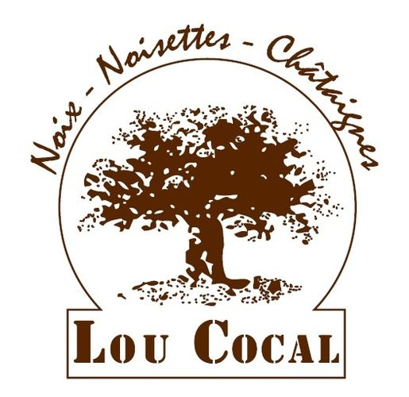
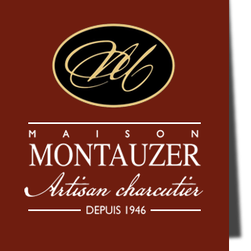
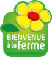

NOS PARTENAIRES
C'est LE spécialiste des poivres d'exception et des épices de qualité superieure. Nous sommes fiers d'avoir séléctionné cette marque tourangelle pour nos épices en vrac.
Visiter le siteConserverie Bretonne depuis 1920, ils perpétuent la tradition des conserves de qualités. Sardines, maqueraux thons, et tartinables au goût authentique.
Visiter le site
Huilerie emblématique née en Touraine, La Tourangelle propose des huiles artisanales de grande qualité aux saveurs authentiques et raffinées.
Visiter le siteMaison familiale reconnue pour son savoir-faire artisanal autour du saumon fumé, du foie gras et des produits gastronomiques d’exception.
Visiter le site
Producteur passionné proposant des spécialités artisanales élaborées avec des ingrédients sélectionnés et un véritable savoir-faire local.
Découvrir
Les Délices de l’Abeille mettent à l’honneur le miel et les produits de la ruche grâce à une apiculture respectueuse et locale.
Découvrir
Une marque locale qui propose des créations gourmandes originales et pleines de caractère pour des découvertes pleines de saveurs.
Découvrir
Maison reconnue pour ses produits gastronomiques du Sud-Ouest, alliant authenticité, tradition et qualité artisanale.
Découvrir
Producteurs engagés dans une agriculture biologique et locale, mettant en avant des produits frais et respectueux de l’environnement.
Découvrir
Une sélection de produits laitiers mettant en avant la qualité du terroir et le savoir-faire des producteurs locaux.
Découvrir
Des jus, compotes et spécialités fruitières élaborés avec des fruits rigoureusement sélectionnés pour préserver toutes leurs saveurs.
DécouvrirBrasserie artisanale tourangelle produisant des bières biologiques de caractère avec un savoir-faire local et authentique.
Visiter le site
Une brasserie locale passionnée proposant des bières artisanales originales brassées avec exigence et créativité.
Découvrir
Producteur local mettant à l’honneur le maïs et ses déclinaisons gourmandes à travers des produits artisanaux et savoureux.
Découvrir
Maison spécialisée dans les cidres artisanaux élaborés avec des pommes soigneusement sélectionnées pour des saveurs authentiques.
Découvrir
Entreprise locale valorisant le terroir tourangeau avec des produits artisanaux de qualité et un savoir-faire familial.
Découvrir
Fromagerie artisanale proposant des fromages de terroir élaborés avec passion et respect des traditions locales.
Découvrir
Exploitation agricole biologique engagée dans une production locale respectueuse de l’environnement et des saisons.
Découvrir
Producteurs passionnés proposant des produits fermiers biologiques issus d’une agriculture locale et responsable.
Découvrir
Une sélection de spécialités régionales mettant en avant les saveurs authentiques et gourmandes du terroir ligérien.
Découvrir
Ferme biologique locale proposant des produits cultivés avec soin dans le respect de la nature et du terroir.
Découvrir